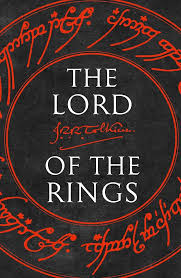

"Even the smallest person can change the course of the future" – And that’s why we’re trusting a barefoot hobbit with **saving the world**. 🏔️💍🔥
A tiny hobbit gets **bullied by a cursed ring**, goes on a *long* hike, and tries to throw it into a volcano… **while a creepy creature follows him, hissing "Preciousss"** the whole time. 🐉
✔️ If you love **epic battles, elves, and a suspiciously long friendship between Frodo & Sam.**
✔️ If you’re prepared for **at least 10 pages describing trees.** 🌳
✔️ If you enjoy *long, scenic walks*… like really long. *Like three whole books long.* 🚶♂️
(*Warning: Reading may cause an **urge to speak in Elvish** or **obsess over second breakfast.** 🍽️)
"One does not simply walk into Mordor." – Boromir 🛡️
"You shall not pass!" – Gandalf ⚡
"I'm going on an adventure!" – Bilbo Baggins 🎒